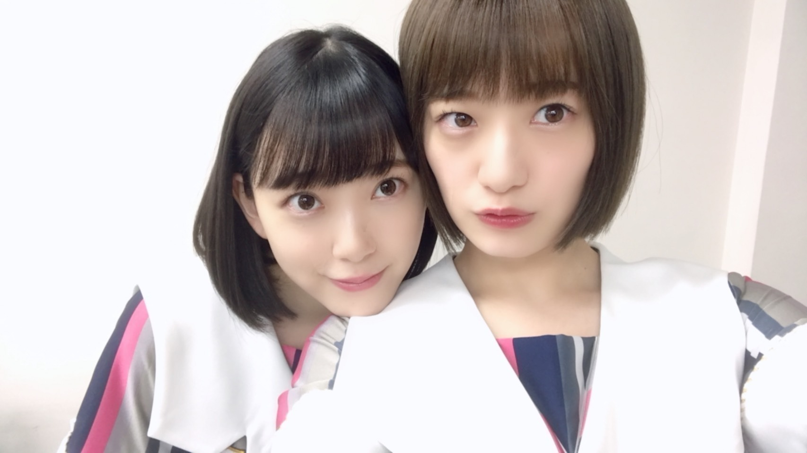

2018/0910Mon遣る瀬無いなって。
こんばんは
もうすっかり秋の風が吹いていますね
炊き込みご飯、さんま、栗
食べたいなぁ
甘党ではないので秋も変わらずご飯系がすきです。
皆さんも
秋の味覚は好きですか？

堀未央奈です
最近はずっと体調を崩していて
たくさんの方に迷惑や心配をおかけしました
健康第一で成り立つこの活動。
改めて体調管理をもっと頑張らないと、と
思いました...
だいぶ良くなり今は元気に生活しています。
気をつけます。
優しい言葉を掛けてくださった方々
ありがとうございました。
秋冬服が好きなのですが
ニットとかふわふわなものとか
あとコートもいろんな種類、
デザインのを
今年は集めたいなぁと思っています。
くすんだクレヨンみたいな
色もかわいいけど
はっきりとした赤、茶も最近は着るんです
秋冬は、
フランスの女の子みたいな
柔らかさの中に個性もあっての服やメイクに
挑戦したいなって思っています！
自分を表現できるもの
例えば私服やメイクもだし
いろんな撮影やブログの書き方など
堀未央奈 をどう表現していこうか
常日頃、模索しながら生きています
だからいろんなものにアンテナを張って
不器用で何もできないからこそ
"挑戦"を繰り返しているのかな...
私探し
一生のテーマで
簡単には見つからなさそうだけど
少しずつ少しずつ
私を好きになっていって
好きになってもらえたら
それ以上の幸せは無いかなって思いました。
頑張りたいです
そういえば
ずっと行きたかったフランスの
マレ地区には車で通っただけで
ちゃんと見れてなくて...
凄く心残りなので
いつかゆっくりヨーロッパ巡りの旅したいです
発売中のarもよろしくお願いします☺︎

気づけば白ばかり
な夏でした
白はずっと好きな色です
何色にも染まらないまっすぐな色
でも、何色かを混ぜたら
綺麗にその色に染まる
一番、柔軟でカメレオン的な色だから
憧れます
今年の秋はどんな色になるかな〜
不安もあるけど
楽しみな気持ちもあるし
私は自分を信じて
頑張りたいなって心から思います
嬉しいことも悔しいこともあるから
頑張れるのかな。
嬉しいことばかりだったらいいのにね。
遣る瀬無いとき、
どうしたらいいかわからなくて
何もかもが嫌になりました。
でも、絶対負けたくないし
逃げたくないって必ず思うんです
守りたいものがあると
実現させたい夢があると
人は
頑張れるんだなって...
そう感じた日でした。

肌寒くなってきたので
皆さん、体調には気をつけてください。
私も気をつけます。
美味しいもの食べに行きたいな〜
ちょっとした秋旅に2期で行ってみたい☺︎

優しいかなさん。
かなさんに会うたび 好き！と愛を叫んで
必ずあしらわれますが
かなさんも私のこと好きだと思う...
かなさん〜
ご飯行きたいです〜

では！
2018/09/10 20:36
コメント(675)
レコメン、 面白かったん^^ テンポも良かったよ。 関西弁も可愛かったし・・笑。 最後、のりさん暴走してたし、、爆 でも相性はいいと思います^^笑 でも元気なみおなの声が一番落ち着くなぁーー・・ 水墨画も良くできてたよ。
みおちゃんこんばんは
今週のレコメンも面白かったよ〜
のりさんて堀ちゃんの前で何であんなに面白く喋れるんだろうね、のりほり亭の電話繋がった子とのミニドラマも面白かったなぁ〜！めちゃめちゃ羨ましいのと同時にみんな凄いなと思って聴いてた。僕だったらみおちゃんと話すてなったら絶対固まっちゃって面白いことなんて1つも言えなくなる…握手だけでも毎回緊張しちゃうのに┯_┯
うちのワンさんも顔舐める癖あるんです。もうほっといたらずっと舐めてる！もう舐めるとこないよってくらい。。まぁでもそういう所も可愛いよね 笑
今日も1日お疲れさま。明日もみおちゃんにとって楽しい1日になりますように
今週のレコメンも面白かったよ〜
のりさんて堀ちゃんの前で何であんなに面白く喋れるんだろうね、のりほり亭の電話繋がった子とのミニドラマも面白かったなぁ〜！めちゃめちゃ羨ましいのと同時にみんな凄いなと思って聴いてた。僕だったらみおちゃんと話すてなったら絶対固まっちゃって面白いことなんて1つも言えなくなる…握手だけでも毎回緊張しちゃうのに┯_┯
うちのワンさんも顔舐める癖あるんです。もうほっといたらずっと舐めてる！もう舐めるとこないよってくらい。。まぁでもそういう所も可愛いよね 笑
今日も1日お疲れさま。明日もみおちゃんにとって楽しい1日になりますように
やぁ(・∀・)ノ未央奈ちゃん♡こんばんは！
りょーへー(R.N.イナダウアーびーむ)だよ♪
メールのお写真、ほっこりするなぁ！プティくん、未央奈ちゃんのことがホントに大好きなんだね！可愛い！めちゃくちゃ顔舐めてるけど！笑
今日は、家でゆっくり過ごしたよ！最近は、朝から晩まで予定がいっぱいで、バタバタしてたから、久しぶりにたくさん寝て、元気が出た気がする！明日からも、楽しむぞー！
#毎日コメント
#今日もお疲れ様
#755の
#みり愛ちゃんとのお写真
#よきよき
#大食いシスターズ
#濃厚な
#バナナジュースが
#飲みたいなぁ
#明日も楽しみおな♡
#おやすみおな( ☆∀☆)
りょーへー(R.N.イナダウアーびーむ)だよ♪
メールのお写真、ほっこりするなぁ！プティくん、未央奈ちゃんのことがホントに大好きなんだね！可愛い！めちゃくちゃ顔舐めてるけど！笑
今日は、家でゆっくり過ごしたよ！最近は、朝から晩まで予定がいっぱいで、バタバタしてたから、久しぶりにたくさん寝て、元気が出た気がする！明日からも、楽しむぞー！
#毎日コメント
#今日もお疲れ様
#755の
#みり愛ちゃんとのお写真
#よきよき
#大食いシスターズ
#濃厚な
#バナナジュースが
#飲みたいなぁ
#明日も楽しみおな♡
#おやすみおな( ☆∀☆)
こんばんは。
プティくん、可愛いです。羨ましいです。
愛されてますね。
自分の愛犬は、ミニチュアダックスフンドなのですが、ペットショップの人に、「この子は、大人になっても小さな子かも。」
と言われましたが、デカくなりすぎ、ミニチュアではなくなりましたが、可愛いです。
因みに、誕生日プレゼントは毎年犬用ケーキだけです。
堀さんを見習おうかな。
頑張って行きましょう！
プティくん、可愛いです。羨ましいです。
愛されてますね。
自分の愛犬は、ミニチュアダックスフンドなのですが、ペットショップの人に、「この子は、大人になっても小さな子かも。」
と言われましたが、デカくなりすぎ、ミニチュアではなくなりましたが、可愛いです。
因みに、誕生日プレゼントは毎年犬用ケーキだけです。
堀さんを見習おうかな。
頑張って行きましょう！
こんばんは！ 堀ちゃん♪
プティ君かわいいね！
顔を舐められるの、そんなに嫌がってない様にみえるけど。。。(笑)
癒されるね。
プティ君かわいいね！
顔を舐められるの、そんなに嫌がってない様にみえるけど。。。(笑)
癒されるね。
堀さんには、素敵な仲間と少し休みたくなったら大好きな岐阜の街があるじゃあないですか！親子で応援してます。
▼・ェ・▼プティ殿ハピバでおめペロうぇーい┌(_Д_┌ )┐ペロペロあむあむあむ堀殿よきよきピーナッツ(=゜ω゜)o--○●○-団子ダベル？
やっぽー。セブンやよ(ฅ'ω'ฅ)♪
レコメン！タイムフリーで聴きました
最近忙しくてなかなかリアルタイムで聴けないし、メールも送れなくてすまぬ(＞＜)
「のりさん早くっ早くっ」ってのめっちゃ可愛かったよ（≧∇≦）
未央奈の無邪気な子供っぽさがめっちゃ好きです♡
来週も楽しいレコメン！待ってます(^-^)
プティくん誕生日いつか分かんないけどおめでとう
いつも未央奈を癒してくれてありがとう(^-^)
これからもよろしくね(๑˃̵ᴗ˂̵)
では今日も1日楽しもうd(@^∇ﾟ)/ﾌｧｲﾄｯ♪
o(ﾟ▽＾)ﾉｼまたねぃ♪
レコメン！タイムフリーで聴きました
最近忙しくてなかなかリアルタイムで聴けないし、メールも送れなくてすまぬ(＞＜)
「のりさん早くっ早くっ」ってのめっちゃ可愛かったよ（≧∇≦）
未央奈の無邪気な子供っぽさがめっちゃ好きです♡
来週も楽しいレコメン！待ってます(^-^)
プティくん誕生日いつか分かんないけどおめでとう
いつも未央奈を癒してくれてありがとう(^-^)
これからもよろしくね(๑˃̵ᴗ˂̵)
では今日も1日楽しもうd(@^∇ﾟ)/ﾌｧｲﾄｯ♪
o(ﾟ▽＾)ﾉｼまたねぃ♪
みおにゃー
応援しとるよ〰️✨
応援しとるよ〰️✨
ブログ更新ありがとう‼
白色似合ってて可愛いよ‼
これからも身体に気を付けて頑張ってください。
応援してます‼
白色似合ってて可愛いよ‼
これからも身体に気を付けて頑張ってください。
応援してます‼
未央奈さん、こんにちは。
初めてコメントします。
僕が未央奈さんを好きになったのは、乃木中初期の頃の、若月さんの脱マジメ化計画で初めて箸君を披露した回でした。
未央奈さんが、設楽さんに箸君をムチャぶりされて、何度もやるんですけど、その一連のシーンが抜群に面白くて、可愛くて、ファンになりました。
未央奈さんはスタートがセンターで、2期のエースとして頑張ってました。
センターを経験した後にアンダーになった事もあったけど、それを糧にして、今ではフロントメンバーに返り咲いて、本当に凄いなと尊敬してます。
人気メンバーで忙しい中で、ブログもマメに更新してくれるし、SHOWROOM配信なども積極的に行ってくれる。テレビを見ていても一生懸命に取り組んでるのが伝わります。
向上心の強さも感じます。
綺麗で可愛い、元気で一生懸命な未央奈さん大好きです。
これからも応援してます。頑張って下さい。
初めてコメントします。
僕が未央奈さんを好きになったのは、乃木中初期の頃の、若月さんの脱マジメ化計画で初めて箸君を披露した回でした。
未央奈さんが、設楽さんに箸君をムチャぶりされて、何度もやるんですけど、その一連のシーンが抜群に面白くて、可愛くて、ファンになりました。
未央奈さんはスタートがセンターで、2期のエースとして頑張ってました。
センターを経験した後にアンダーになった事もあったけど、それを糧にして、今ではフロントメンバーに返り咲いて、本当に凄いなと尊敬してます。
人気メンバーで忙しい中で、ブログもマメに更新してくれるし、SHOWROOM配信なども積極的に行ってくれる。テレビを見ていても一生懸命に取り組んでるのが伝わります。
向上心の強さも感じます。
綺麗で可愛い、元気で一生懸命な未央奈さん大好きです。
これからも応援してます。頑張って下さい。
やぁ(・∀・)ノ未央奈ちゃん♡こんばんは！
りょーへー(R.N.イナダウアーびーむ)だよ♪
一昨日までバタバタしてたけど、やっと落ち着いてきた！コメントもちゃんと出来そう！
先週は、サークルの合宿で長野に行ってて、今週はボランティアで宮城に行ってた、っていうね！かなりハードだったけど、楽しかったよー！合宿は、先輩や同期との仲が深まったと思うし、ボランティアの方は、学ぶことがたくさん！どちらも、良い経験、素敵な夏の思い出になったなぁ！
未央奈ちゃんとかなりんのツーショット、めちゃくちゃ好き！未央奈ちゃんがかなりんに甘えきってる感じがよきだなぁ！定期的に見たくなるもん！笑 二人のユニット曲とか、期待しちゃう！
#毎日コメント
#今日もお疲れ様
#今日は
#早く寝よっかなぁー
#明日も元気に過ごしたいしね
#夜ご飯
#サンマらしい
#秋だ～～
#明日も楽しみおな♡
#おやすみおな(゜ﾛ゜;ﾉ）ﾉ
りょーへー(R.N.イナダウアーびーむ)だよ♪
一昨日までバタバタしてたけど、やっと落ち着いてきた！コメントもちゃんと出来そう！
先週は、サークルの合宿で長野に行ってて、今週はボランティアで宮城に行ってた、っていうね！かなりハードだったけど、楽しかったよー！合宿は、先輩や同期との仲が深まったと思うし、ボランティアの方は、学ぶことがたくさん！どちらも、良い経験、素敵な夏の思い出になったなぁ！
未央奈ちゃんとかなりんのツーショット、めちゃくちゃ好き！未央奈ちゃんがかなりんに甘えきってる感じがよきだなぁ！定期的に見たくなるもん！笑 二人のユニット曲とか、期待しちゃう！
#毎日コメント
#今日もお疲れ様
#今日は
#早く寝よっかなぁー
#明日も元気に過ごしたいしね
#夜ご飯
#サンマらしい
#秋だ～～
#明日も楽しみおな♡
#おやすみおな(゜ﾛ゜;ﾉ）ﾉ
こんばんは。
ａｒ 買って見てます。
ブランド別のグラビアは、最初のページが特に秀逸です。
写真集でメイクを担当された方のメイク担当との事でしたので、
なるほど、と思いました。
このメイクの感じは、やはり未央奈さんに合っていると思います。
そして、おもてなし達人への道。 水墨画の完成度の高さ。
経験者の様です。 才能があるのでは。と思いました。
今年もあっという間に、残り数ヶ月ですね。
一つの提案として、今までもそうだったと思いますが、
自然体。 を意識して仕事、活動を、振舞っては、
いかがしょうか？
今までと違うのは、よりリラックスして、より肩の力を抜いて。
なぜなら、未央奈さんの魅力は、真面目さ故に、気負っている時
も、魅力的なのは、言わずもがなですが、
より自然な佇まいの時、一番魅力を感じるように思うからです。
飽くまで一ファンの意見ですが、
参考になれば幸いです。
お誕生日モバメ。今年もありがとう。
体調が良くなって安心したよ
心配していたんだからね
また色んな所で元気な姿見せて下さい！楽しみにしてるからね
心配していたんだからね
また色んな所で元気な姿見せて下さい！楽しみにしてるからね
扁桃炎、大丈夫だった？？
体には気をつけてね！
みおなが元気なくなったら俺も元気なくなっちゃうから…
大好きやお〜
体には気をつけてね！
みおなが元気なくなったら俺も元気なくなっちゃうから…
大好きやお〜
みおちゃんこんばんは〜
今日ずんなさんのブログ見てたら塩アイスの3人の写真が！
ひさしぶりに3人一緒にいるとこ見れて嬉しい。プリン会も塩アイスも大切にしてね
2期生の絆、温かくて好きです。同期って羨ましい！
明日は日曜日だけど僕は仕事です、みおちゃんもかな？？
お互い頑張ろーう…おやすみおな
今日ずんなさんのブログ見てたら塩アイスの3人の写真が！
ひさしぶりに3人一緒にいるとこ見れて嬉しい。プリン会も塩アイスも大切にしてね
2期生の絆、温かくて好きです。同期って羨ましい！
明日は日曜日だけど僕は仕事です、みおちゃんもかな？？
お互い頑張ろーう…おやすみおな
未央奈ちゃん、ひろっしーです！コメント投稿507回目です！
前回はモバメの感想を書きました！
時間→「No.645 2018年9月14日 00:54」
モバメ毎日ありがとうございます！
ペットのために、仕事終わりに誕プレを探しに行くなんて、ペット想いの優しい親子ですね！写真見て本当に大きくてビックリしましたし、可愛さや人懐っこさも凄く伝わってきました！それにしても、めっちゃラブラブやな～(羨)
今回は短くてゴメンね！「Mステ」頑張れ～！TVの前で応援しながら見守らせて頂きます！楽しみ～！嵐と乃木坂は絶対見逃すもんか～！
ここまで読んで頂きありがとうございました！
毎日お仕事お疲れ様です！体調にはくれぐれも気を付けて頑張ってくださいね！
おやすみおな～！
前回はモバメの感想を書きました！
時間→「No.645 2018年9月14日 00:54」
モバメ毎日ありがとうございます！
ペットのために、仕事終わりに誕プレを探しに行くなんて、ペット想いの優しい親子ですね！写真見て本当に大きくてビックリしましたし、可愛さや人懐っこさも凄く伝わってきました！それにしても、めっちゃラブラブやな～(羨)
今回は短くてゴメンね！「Mステ」頑張れ～！TVの前で応援しながら見守らせて頂きます！楽しみ～！嵐と乃木坂は絶対見逃すもんか～！
ここまで読んで頂きありがとうございました！
毎日お仕事お疲れ様です！体調にはくれぐれも気を付けて頑張ってくださいね！
おやすみおな～！
堀さん、こんばんは。
プティくん１歳になるんですね。かわいくて愛しくて人懐っこいだなんて見事に飼い主に似ましたね。犬が人の顔舐めるのって愛情表現とか服従とか餌くれとか不安解消の場合が有るそうです。愛情表現なら致し方ないと思います。
僕は「犬ヶ島」の最初に出会う場面だけで泣くくらいには犬好きなんですが、「僕のワンダフル・ライフ」では途中の犬目線の映像で妄想リクエストの”のぼる”を思い出して、画面が高速ベロ中のイジリーさんに切り替わったらどうしようって急激に涙が引いたのを、ふと思い出しました。
お仕事頑張ってくださいね。Mステも必ず見ます。
プティくん１歳になるんですね。かわいくて愛しくて人懐っこいだなんて見事に飼い主に似ましたね。犬が人の顔舐めるのって愛情表現とか服従とか餌くれとか不安解消の場合が有るそうです。愛情表現なら致し方ないと思います。
僕は「犬ヶ島」の最初に出会う場面だけで泣くくらいには犬好きなんですが、「僕のワンダフル・ライフ」では途中の犬目線の映像で妄想リクエストの”のぼる”を思い出して、画面が高速ベロ中のイジリーさんに切り替わったらどうしようって急激に涙が引いたのを、ふと思い出しました。
お仕事頑張ってくださいね。Mステも必ず見ます。
白のワンピース着てるだけで透明感増してるなー(≧∇≦*)
秋の味覚好きだよーー＼(^o^)／
焼き芋とか〜
ａｒ見た！良く写ってたよ！
最近かなりんメンバーから人気じゃない？？
どうしたんだろ笑
焼き芋とか〜
ａｒ見た！良く写ってたよ！
最近かなりんメンバーから人気じゃない？？
どうしたんだろ笑
私も最近ずーっと体調崩してました 今年3回目の胃腸炎…。お互い体調に気をつけましょう
今年3回目の胃腸炎…。お互い体調に気をつけましょう
ショート＆白ワンピースの堀ちゃん！清楚感はんぱない！！！
ほんとかわいいし、憧れです（*＾-＾*）
ほんとかわいいし、憧れです（*＾-＾*）
ずっと応援してるよ！頑張れ！！
みおなー、こんばんは！
やっぱり、未央奈のこと、すきだわー。
いつも。ありがとね。 お疲れ様！
まぁ、たまにはゆっくり、休む時間も、必要だよ。
気に、しすぎないでね。
未央奈とは、考え方が、似てる気がするー、
多分、気が合うと思う！ 勝手に 笑
これからも、応援してるよ、よろしくね！
握手会も、行ってみたいなー、直接会って、話してみたい。 では、また。 cat,♪ ♡♫


やっぱり、未央奈のこと、すきだわー。
いつも。ありがとね。 お疲れ様！
まぁ、たまにはゆっくり、休む時間も、必要だよ。
気に、しすぎないでね。
未央奈とは、考え方が、似てる気がするー、
多分、気が合うと思う！ 勝手に 笑
これからも、応援してるよ、よろしくね！
握手会も、行ってみたいなー、直接会って、話してみたい。 では、また。 cat,♪ ♡♫


今年はライブ当たらなくてまだ未央奈に会えてないからねぇ…(｡-ω-)
ドームあると良いな☆